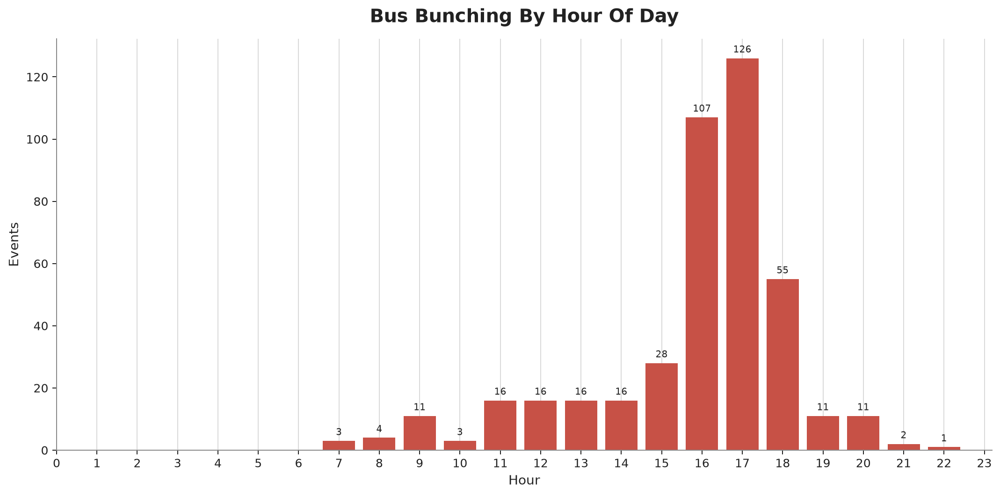
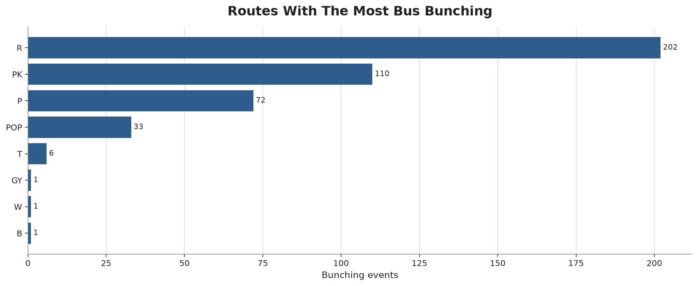
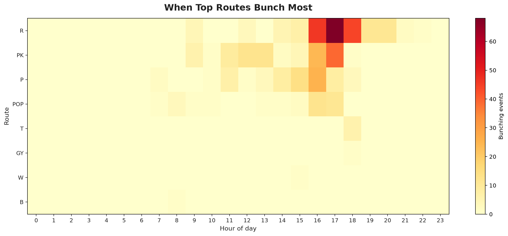
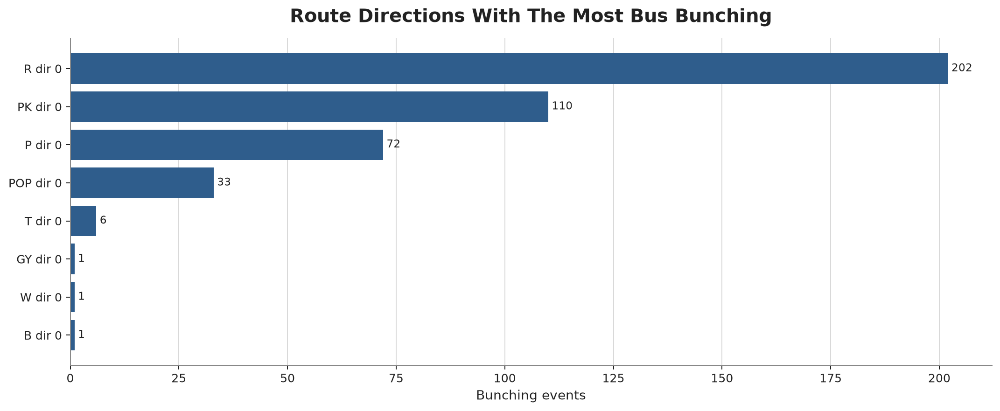
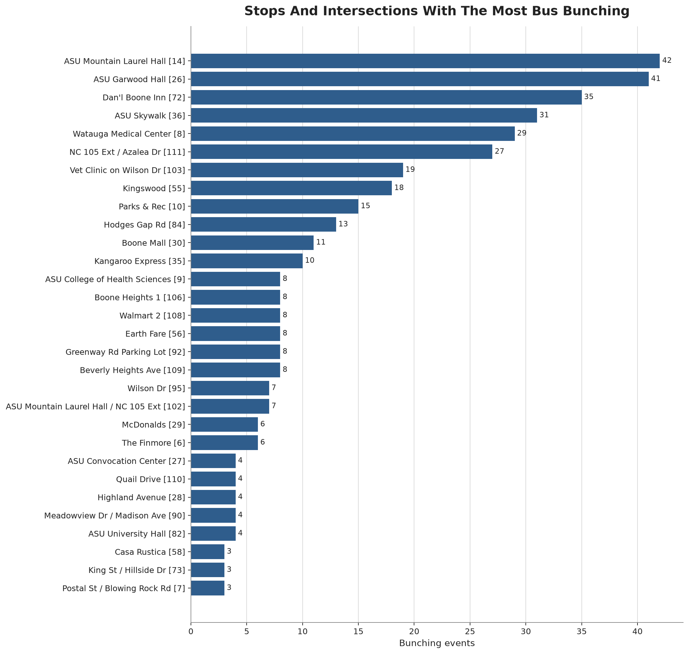

Bus bunching
Two buses on the same route and direction arrive too close together.
IP3 Partner Agency
Boone, North Carolina. Current bus-bunching observations from the GTFS-RT export.
AI Prediction
The prediction ranks where AppalCART is most likely to see bus bunching next, using observed patterns by route, hour, weekday, and stop location from the current export.
Use this list to decide where to look first. It does not predict that a specific bus will bunch.
| Day | Route | Hour | Predicted location | AI priority | Prediction score | Evidence |
|---|---|---|---|---|---|---|
| Thu Oct 1 | PK | 16:00 | ASU Garwood Hall [26] | Medium | 50/100 | 12 stop-level observations; same weekday history (Thursday) |
| Thu Oct 1 | R | 16:00 | Watauga Medical Center [8] | Monitor | 42/100 | 10 stop-level observations; same weekday history (Thursday) |
| Thu Oct 1 | P | 16:00 | ASU Mountain Laurel Hall [14] | Monitor | 33/100 | 8 stop-level observations; same weekday history (Thursday) |
| Thu Oct 1 | POP | 17:00 | ASU Schaefer Center [57] | Monitor | 33/100 | 8 stop-level observations; same weekday history (Thursday) |
| Thu Oct 1 | P | 11:00 | Kangaroo Express [35] | Monitor | 29/100 | 7 stop-level observations; same weekday history (Thursday) |
| Thu Oct 1 | PK | 13:00 | ASU Garwood Hall [26] | Monitor | 21/100 | 5 stop-level observations; same weekday history (Thursday) |
| Day | Route | Hour | Predicted location | AI priority | Prediction score | Evidence |
|---|---|---|---|---|---|---|
| Fri Oct 2 | R | 18:00 | Walmart 2 [108] | Medium | 62/100 | 15 stop-level observations; same weekday history (Friday) |
| Fri Oct 2 | R | 17:00 | Kingswood [55] | Medium | 54/100 | 13 stop-level observations; same weekday history (Friday) |
| Fri Oct 2 | PK | 17:00 | Boone Mall [30] | Monitor | 42/100 | 10 stop-level observations; same weekday history (Friday) |
| Fri Oct 2 | P | 16:00 | ASU Mountain Laurel Hall [14] | Monitor | 33/100 | 8 stop-level observations; same weekday history (Friday) |
| Fri Oct 2 | R | 16:00 | Dan'l Boone Inn [72] | Monitor | 25/100 | 6 stop-level observations; same weekday history (Friday) |
| Fri Oct 2 | R | 19:00 | NC 105 Ext / Azalea Dr [111] | Monitor | 17/100 | 4 stop-level observations; same weekday history (Friday) |
Patterns concentrate by route, hour, and repeated stop locations.
Top route: R. Busiest hour: 17:00.
These charts summarize the current AppalCART event export. Each row is a stop-level observation where two adjacent buses on the same route and direction were predicted to arrive closer together than the scheduled-headway threshold.
The current file covers 2026-08-24 to 2026-09-19 and contains 426 stop-level observations across 8 routes and 54 stops.
Counts are stop-level observations. A close bus pair can be counted at multiple downstream stops if it remains bunched along the route.
Shows how observations vary by service date in the current export. Spikes are useful review dates, not proof of a one-time external cause.

Shows when observations concentrate during the service day. Use the tallest bars to target schedule review, dispatch monitoring, or field follow-up.

Ranks routes by stop-level observations. Higher counts indicate where bus-bunching prediction should focus first in the current export.

Rows are routes and columns are hours of day. Hotter cells show route and hour combinations with more repeated stop-level observations.

Splits route totals by GTFS direction_id, which helps separate inbound and outbound patterns when the same route has different operating conditions by direction.
| Date | Hour | Routes | Observations |
|---|---|---|---|
| 2026-09-18 | 17:00 | 3 | 21 |
| 2026-08-25 | 16:00 | 3 | 17 |
| 2026-08-28 | 18:00 | 2 | 16 |
| 2026-09-02 | 17:00 | 2 | 15 |
| 2026-08-24 | 16:00 | 1 | 13 |
| 2026-08-24 | 17:00 | 1 | 13 |
| 2026-08-25 | 17:00 | 2 | 12 |
| 2026-09-10 | 16:00 | 3 | 12 |
| 2026-09-14 | 17:00 | 2 | 12 |
| 2026-09-14 | 12:00 | 1 | 11 |
Open the interactive map to view stop locations and observation counts.
Open full interactive map
Ranks stops and intersections by repeated observations. These are useful candidates for field review, stop-area operations checks, or schedule timing review.
| Route | Observations | Top stop | At stop | Top hour | At hour |
|---|---|---|---|---|---|
| R | 202 | Dan'l Boone Inn | 35 | 17:00 | 68 |
| PK | 110 | ASU Garwood Hall | 25 | 17:00 | 39 |
| P | 72 | ASU Garwood Hall | 16 | 16:00 | 25 |
| POP | 33 | Hodges Gap Rd | 13 | 16:00 | 12 |
| T | 6 | ASU Mountain Laurel Hall | 3 | 18:00 | 6 |
| GY | 1 | Ivy Terrace | 1 | 18:00 | 1 |
| W | 1 | The Finmore | 1 | 15:00 | 1 |
| B | 1 | ASU Peacock Traffic Circle | 1 | 08:00 | 1 |
| Stop | Stop ID | Routes affected | Observations |
|---|---|---|---|
| ASU Mountain Laurel Hall | 14 | 3 | 42 |
| ASU Garwood Hall | 26 | 2 | 41 |
| Dan'l Boone Inn | 72 | 1 | 35 |
| ASU Skywalk | 36 | 2 | 31 |
| Watauga Medical Center | 8 | 2 | 29 |
| NC 105 Ext / Azalea Dr | 111 | 1 | 27 |
| Vet Clinic on Wilson Dr | 103 | 1 | 19 |
| Kingswood | 55 | 1 | 18 |
| Parks & Rec | 10 | 2 | 15 |
| Hodges Gap Rd | 84 | 1 | 13 |
Two buses on the same route and direction arrive too close together.
A detected bunching case at one stop and snapshot. One close bus pair may produce multiple stop-level observations as it travels along the route.
How close the buses were compared with the bunching threshold. Higher severity means the buses were closer together.
Repeat patterns by route, stop, day, or hour.
Spikes linked to incidents, detours, or other unusual operating conditions.
Weather is context for interpretation, not a causal finding.
| Time | Temp | Wind | Conditions |
|---|---|---|---|
| Oct 1, 2026 at 12:00 PM ET | 73.1 F | 6.1 mph | Mostly Cloudy |
| Oct 1, 2026 at 1:00 PM ET | 74.7 F | 4.9 mph | Cloudy |
| Oct 1, 2026 at 2:00 PM ET | 75.6 F | 3.8 mph | Cloudy |
| Oct 1, 2026 at 3:00 PM ET | 76.2 F | 3.3 mph | Mostly Cloudy |
| Oct 1, 2026 at 4:00 PM ET | 76.0 F | 2.6 mph | Partly Cloudy |
| Oct 1, 2026 at 5:00 PM ET | 74.2 F | 2.8 mph | Mostly Clear |
Observed AppalCART bus-bunching context from the current export.
0 stop-level observations.
No stop-level bunching observations were detected for this service date.
The current export does not show a higher-than-usual day.
3 stop-level observations.
All detected observations were on Route R at Dan'l Boone Inn in the 14:00 hour.
Below the observed-date median of 25 observations; the current export does not show a higher-than-usual day.